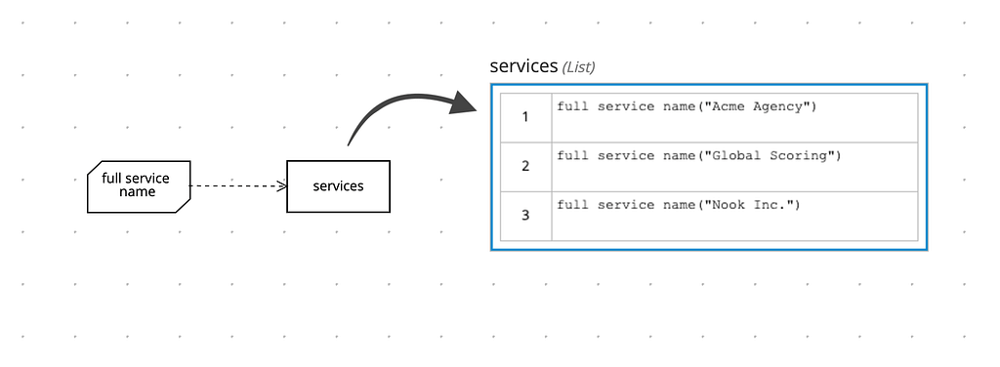

Lists as DMN boxed expressions
Literal expressions, Decision Tables, Contexts, Relations, Functions, and Invocations are quite powerful boxed expressions already. However, now our editor supports Lists as a new boxed expression type.
Lists represent a group of FEEL expressions. You may use it to define complex items for a particular decision, check this example:

Notice that each cell of this list is calling a BKM function that returns a value for each item. Let’s check the output:
| { | |
| "full service name": "function full service name( service name )", | |
| "services": [ | |
| "Acme Agency (status: running)", | |
| "Global Scoring (status: stopped)", | |
| "Nook Inc. (status: running)" | |
| ] | |
| } |
Pretty straight forward isn’t? :-) Now, you know how to use boxed lists! Stay tuned for new features.
Lists as DMN boxed expressions was originally published in KIE Group — Decision Tooling team on Medium, where people are continuing the conversation by highlighting and responding to this story.